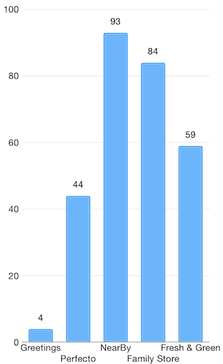

Point Labels: Overview
TKChart supports point labels. Point labels are visual elements that are placed on the plot at the location of series data points showing the data point’s value or other string by your choice. By default point labels are hidden. If you would like to show them, you should set TKChartPointLabelStyle’s textHidden property to NO. You can also alter offset origin of the labels using the labelOffset property.
Objective-C
columnSeries.style.pointLabelStyle.textHidden = NO;
columnSeries.style.pointLabelStyle.labelOffset = UIOffsetMake(0, -15);
Swfit
columnSeries.style.pointLabelStyle.textHidden = false
columnSeries.style.pointLabelStyle.labelOffset = UIOffsetMake(0, -15)
